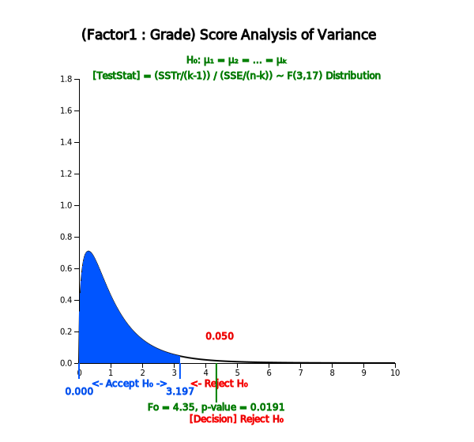

In section 8.1, we discussed how to compare means of two populations using the testing hypothesis. This chapter
discusses how to compare means of several populations. There are many examples of comparing means of several
populations as follows:
- Are average hours of library usage for each grade the same?
- Are yields of three different rice seeds equal?
- In a chemical reaction, are response rates the same at four different temperatures?
- Are average monthly wages of college graduates the same at three different cities?
The group variable used to distinguish groups of the population, such as the grade or the rice, is called a factor.
Factor
The group variable used to distinguish groups of the population is called a factor.
This section describes the one-way analysis of variance (ANOVA) which compares population means when there is a
single factor. Section 9.2 describes how the experiment is designed to extract sample data. Section 9.3 describes
the two-way ANOVA to compare several population means when there are two factors. Let's take a look at the
following example.
Example 9.1.1
In order to compare the English proficiency of each grade at a university, samples were randomly selected from
each grade to take the same English test, and data are as in Table 9.1.1. The last row is a calculation of
the average \({\overline y}_{1\cdot}\), \({\overline y}_{2\cdot}\), \({\overline y}_{3\cdot}\), \({\overline y}_{4\cdot}\) for each grade.
Table 9.1.1 English Proficiency Score by Grade
Socre
Student 1
Student 2
Student 3
Student 4
Student 5
Student 6
Student Average
Grade 1
81
75
69
90
72
83
\({\overline y}_{1\cdot}\)=78.3
Grade 2
65
80
73
79
81
69
\({\overline y}_{2\cdot}\)=74.5
Grade 3
72
67
62
76
80
\({\overline y}_{3\cdot}\)=71.4
Grade 4
89
94
79
88
\({\overline y}_{4\cdot}\)=87.5
[Ex] ⇨ eBook ⇨ EX090101_EnglishScoreByGrade.csv.
1) Using 『eStat』 , draw a dot graph of test scores for each grade and compare their averages.
2) We want to test a hypothesis whether average scores of each grade are the same or not. Set up a null
hypothesis and an alternative hypothesis.
3) Apply the one-way analysis of variances to test the hypothesis in question 2).
4) Use 『eStat』 to check the result of the ANOVA test.
Answer
1) If you draw a dot graph of English scores by each grade, you can see whether scores of each grade are similar.
If you plot the 95% confidence interval of the population mean studied in Chapter 6 on each dot graph, you can
see a more detailed comparison.
In order to draw a dot graph with data shown in Table 9.1.1 using 『eStat』 , enter data on the sheet
and set variable names to 'Grade' and 'Score' as shown in <Figure 9.1.1>. In the variable selection box
which appears by clicking the ANOVA icon on the main menu of 『eStat』 , select 'Analysis Var' as ‘Score’
and 'By Group' as ‘Grade’. The dot graph of English scores by each grade and the 95% confidence interval are displayed as shown in <Figure 9.1.2>.
<Figure 9.1.1> 『eStat』 data input for ANOVA
<Figure 9.1.2> 95% Confidence Interval by grade
To review the normality of the data, pressing the [Histogram] button under this graph (<Figure 9.1.3>) will
draw the histogram and normal distribution together, as shown in <Figure 9.1.4>.
<Figure 9.1.3> Options of ANOVA
<Figure 9.1.4> Histogram of English score by grade
<Figure 9.1.2> shows sample means as \({\overline y}_{1\cdot}\)= 78.3,
\({\overline y}_{2\cdot}\) = 74.5, \({\overline y}_{3\cdot}\) = 71.4,
\({\overline y}_{1\cdot}\) = 87.5. The sample mean of the 4th grader is
relatively large and the order of the sample means in English is
\({\overline y}_{3\cdot} \lt {\overline y}_{2\cdot} \lt {\overline y}_{1\cdot} \lt {\overline y}_{4\cdot} \).
\({\overline y}_{2\cdot}\) and \({\overline y}_{3\cdot}\) are similar, but \({\overline y}_{4\cdot}\) is
much greater than the other three. Therefore, it can be expected that the population mean
\(\mu_{2}\) and \(\mu_{3}\) would be the same and \(\mu_{4}\) will differ from three other population means. However, we need to test whether this difference by sample
means is statistically significant.
2) In this example, the null hypothesis to test is that population means of English scores of the four grades
are all the same, and the alternative hypothesis is that population means of the English scores are not the same.
In other words, if are the population means of English scores for each grade, the hypothesis to test can be written as follows,
Alternative hypothesis \( \quad \small H_1\): at least one pair of \(\mu_i\) is not the same
3) A measure that can be considered first as a basis for testing differences in multiple sample means would be
the distance from each mean to the overall mean. In other words, if the overall sample mean for all 21 students
is expressed as \(\overline y_{\cdot \cdot}\), the distance from each sample mean to the overall mean is as follows when the number of samples
in each grade is weighted. This distance is called the between sum of squares (SSB) or the treatment sum of squares (SSTr).
If the distance \(\small SSTr\) is close to zero, all sample means of English scores for four grades are similar.
However, this treatment sum of squares can be larger if the number of populations increases.
It requires modification to become a test statistic to determine whether several population means are equal.
The distance from each observation to its sample mean of the grade is called the within sum of squares (SSW) or
the error sum of squares (SSE) as defined below.
If population distributions of English scores in each grade follow normal distributions and their variances are
the same, the following test statistic has the distribution.
This statistic can be used to test whether population English scores of four grades are the same or not. In
the test statistic, the numerator \(\frac{SSTr}{4-1}\) is called the treatment mean square (MSTr) which implies a variance between
grade means. The denominator \(\frac{SSE}{21-4}\) is called the error mean square (MSE) which implies a variance within each grade.
Thus, the above test statistics are based on the ratio of two variances which is why the test of multiple
population means is called an analysis of variance (ANOVA).
Calculated test statistic which is the observed \(\small F\) value, \(\small F_{0}\) , using data of English scores for each grade is as follows.
Since \(\small F_{3,17; 0.05}\) = 3.20, the null hypothesis that population means of English scores of each grade are the same,
\(\small H_0 : \mu_1 = \mu_2 = \mu_3 = \mu_4 \) , is rejected at the 5% significance level.
In other words, there is a difference in population means of English scores of each grade.
The following ANOVA table provides a single view of the above calculation.
Factor
Sum of Squares
Degree of freedom
Mean Squares
F ratio
Treatment
SSTr=643.633
4-1
MSTr=\(\frac{643.633}{3}\)
\(F_0 = 4.347\)
Error
SSE= 839.033
21-4
MSE=\(\frac{839.033}{17}\)
Total
SST = 1482.666
20
4) In <Figure 9.1.3>, if you select the significance level of 5%, confidence level of 95%,
and click [ANOVA F test] button, a graph showing the location of the test statistic in the F distribution
is appeared as shown in <Figure 9.1.5>. Also, in the Log Area, the mean and confidence interval tables
and test result for each grade are appeared as in<Figure 9.1.6>.

<Figure 9.1.5> 『eStat』 ANOVA F test
<Figure 9.1.6> 『eStat』 Basic Statistics and ANOVA table
The analysis of variance is also possible using 『eStatU』. Entering the data as <Figure 9.1.7>
and clicking the [Execute] button will have the same result as in <Figure 9.1.5>.
<Figure 9.1.7> ANOVA data input at 『eStatU』
The above example refers to two variables, the English score and grade. The variable such as the English score is
called as an analysis variable or a response variable. The response variable is mostly a continuous variable. The
variable used to distinguish populations such as the grade is called a group variable or a factor variable which
is mostly a categorical variable. Each value of a factor variable Is called a level of the factor and the number
of these levels is the number of populations to be compared. In the above example, the factor has four levels,
1st, 2nd, 3rd and 4th grade. The term 'response' or 'factor' was originated to analyze data through experiments
in engineering, agriculture, medicine and pharmacy.
The analysis of variance method that examines the effect of single factor on the response variable is called the
one-way ANOVA. Table 9.1.2 shows the typical data structure of the one-way ANOVA when the number of levels of a
factor is \(k\) and the numbers of observation at each level are \(n_1 , n_2 , ... , n_k\).
Table 9.1.2 Notation of the one-way ANOVA
Factor
Observed values of sample
Average
Level 1
\(Y_{11} \; Y_{12}\; \cdots \;Y_{1n_1} \)
\(\overline Y_{1\cdot}\)
Level 2
\(Y_{21} \; Y_{22}\; \cdots \;Y_{2n_2} \)
\(\overline Y_{2\cdot}\)
\(\cdots\)
\(\cdots\)
\(\cdots\)
Level k
\(Y_{k1} \; Y_{k2}\; \cdots \;Y_{kn_k} \)
\(\overline Y_{k\cdot}\)
Statistical model for the one-way analysis of variance is given as follows:
$$
\begin{align}
Y_{ij} &= \mu_i + \epsilon_{ij} \\
&= \mu + \alpha_i + \epsilon_{ij}, i=1,2,...,k; j=1,2,..., n_i \\
\end{align}
$$
\(Y_{ij}\) represents the \(j^{th}\) observed value of the response variable for the \(i^{th}\) level of factor.
The population mean of the \(i^{th}\) level, \(\mu_{i}\), is represented as \(\mu + \alpha_{i}\) where \(\mu\)
is the mean of entire population and \(\alpha_{i}\) is the effect of \(i^{th}\) level for the response
variable. \(\epsilon_{ij}\) denotes an error term of the \(j^{th}\) observation
for the \(i^{th}\) level and the all error terms are assumed independent of each other and follow
the same normal distribution with the mean 0 and variance \(\sigma^{2}\).
The error term \(\epsilon_{ij}\) is a random variable in the response variable due to reasons other than levels of the factor.
For example, in the English score example, differences in English performance for each grade can be caused
by other variables besides the variables of grade, such as individual English study hours, gender and IQ.
However, by assuming that these changes are relatively small compared to changes due to differences in grade, the
error term can be interpreted as the sum of these various reasons.
The hypothesis to test can be represented using \(\alpha_{i}\) instead of \(\mu_{i}\) as follows:
Alternative hypothesis \( \quad H_1\): at least one \(\alpha_i\) is not equal to 0
In order to test the hypothesis, the analysis of variance table as Table 9.1.3 is used.
Table 9.1.3 Analysis of variance table of the one-way ANOVA
Factor
Sum of Squares
Degree of freedom
Mean Squares
F ratio
Treatment
SSTr
\(k-1\)
MSTr=\(\frac{SSTr}{k-1}\)
\(F_0 = \frac{MSTr}{MSE}\)
Error
SSE
\(n-k\)
MSE=\(\frac{SSE}{n-k}\)
Total
SST
\(n-1\)
\(\qquad n = \sum_{i=1}^{n} \; n_i\)
The three sum of squares for the variance analysis can be described as follows: For an explanation, first define
the following statistics:
\({\overline Y}_{i \cdot} \; \) Mean of observations at the \(i^{th}\) level
\({\overline Y}_{\cdot \cdot} \; \) Mean of total observations
SST = \(\sum_{i=1}^{k} \sum_{j=1}^{n_i} ( Y_{ij} - {\overline Y}_{\cdot \cdot} )^2 \;\) :
The sum of squared distances between observed values of the response variable and the mean of total observations
is called the total sum of squares (SST).
SSTr = \(\sum_{i=1}^{k} \sum_{j=1}^{n_i} ( {\overline Y}_{i \cdot} - {\overline Y}_{\cdot \cdot} )^2 \;\) :
The sum of squared distances between the mean of each level and the mean of total observations is called the
treatment sum of squares (SSTr). It represents the variation between level means.
SSE = \(\sum_{i=1}^{k} \sum_{j=1}^{n_i} ( {Y}_{ij} - {\overline Y}_{i \cdot} )^2 \;\) :
The sum of squared distances between observations of the \(i^{th}\) level and the mean of the \(i^{th}\) level is referred to as
'within variation,' and is called the error sum of squares (SSE).
The degree of freedom of each sum of squares is determined by the following logic:
The SST consists of \(n\) number of squares, \(( Y_{ij} - {\overline Y}_{\cdot \cdot} )^2\),
but \( {\overline Y}_{\cdot \cdot} \) should be calculated first, before SST is calculated,
and hence the degree of freedom of SST is \(n-1\). The SSE consists of \(n\) number of squares,
\(( {Y}_{ij} - {\overline Y}_{i \cdot} )^2 \), but the number of values,
\({\overline Y}_{1 \cdot}, {\overline Y}_{2 \cdot}, ... , {\overline Y}_{k \cdot}\)
should be calculated first, before SSE is calculated, and hence the degree of freedom of SSE is \(n-k\).
The degree of freedom of SSTr is calculated as the degree of freedom of SST minus the degree of freedom of SSE which is .
In the one-way analysis of variance, the following facts are always established:
Partition of sum of squares and degrees of freedom
Sum of squares: SST = SSTr + SSE
Degrees of freedom: \((n-1) = (k-1) + (n-k)\)
The sum of squares divided by the corresponding degrees of freedom is referred to as the mean squares and Table
9.1.3 defines the treatment mean squares (MSTr) and error mean squares (MSE). As in the meaning of the sum of
squares, the treatment mean square implies the average variation between each level of the factor, and the error
mean square implies the average variation within observations in each level. Therefore, if MSTr is relatively
much larger than MSE, we can conclude that the population means of each level, \(\mu_i\), are not the same. So by what
criteria can you say it is relatively much larger?
The calculated \(F\) value, \(F_0\), in the last column of the ANOVA table represents the relative size of MSTr and MSE. If
the assumptions of \(\epsilon_{ij}\) based on statistical theory are satisfied, and if the null hypothesis
\(\small H_0 : \alpha_1 = \alpha_2 = \cdots = \alpha_k \) = 0 is true, then the
below test statistic follows a F distribution with degrees of freedoms \(k-1\) and \(n-k\).
$$
F_{0} = \frac { \frac{SSTr}{(k-1)} } { \frac{SSE}{(n-k)} }
$$
Therefore, when the significance level is \(\alpha\) for a test, if the calculated value \(F_0\) is greater
than the value of \(F_{k-1,n-k; α}\), then the null hypothesis is rejected. That is,
it is determined that the population means of each factor level are not all the same.
Decision Rule If \(\;\; F_0 > F_{k-1,n-k; α} \), then reject \(H_0\)
(Note: 『eStat』 calculates the \(p\)-value of this test. Hence if the \(p\)-value is smaller than
the significance level \(\alpha\), then reject the null hypothesis. )
Practice 9.1.1(Plant Growth by Condition)
Results from an experiment to compare yields (as measured by dried weight of plants) obtained under a control
(leveled ‘ctrl’) and two different treatment conditions (leveled ‘trt1’ and ‘trt2’). The weight data with
30 observations on control and two treatments (‘crtl’, ‘trt1’, ‘trt2’), are saved at the following location
of 『eStat』. Answer the followings using 『eStat』 ,
[Ex] ⇨ eBook ⇨ PR090101_Rdatasets_PlantGrowth.csv
1) Draw a dot graph of weights for each control and treatments.
2) Test a hypothesis whether the weights are the same or not. Use the 5% significance level.